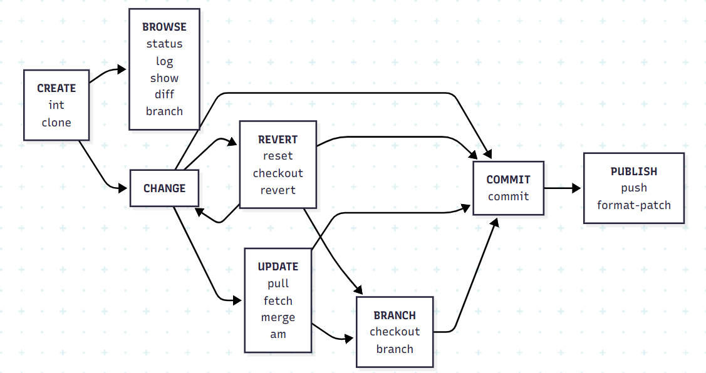

# From existing data
cd ~/my_project_directory
git init
git add .
# From existing repository
git clone ~/existing repo ~/new/repo
git clone git://host.org/project.git
git clone ssh://user@host.org/project.git# Files changed in working directory
git status
# Changes made to tracked files
git diff
# What changed between ID1 and ID2
git diff ID1 ID2
# History of changes
git log
# History of changes for file with diffs
git log -p FILE DIRECTORY
# Who changed what and when in a file
git blame FILE
# A commit identified by ID
git show ID
# A specific file from a specific ID
git show ID:FILE
# All local branches
# star (*) marks the current branch
git branch
# Return to the last commited state
# This cannot be undone!
git reset --hard
# Revert the last commit
# Creates a new commit
git revert HEAD
# Revert specific commit
# Creates a new commit
git revert ID
# Fix the last commit
# (after editing the broken files)
git commit -a --amend
# Checkout the ID version of a file
git checkout ID FILE># Fetch latest changes from origin
# (this does not merge them)
git fetch
# Pull latest changes from origin
# (does a fetch followed by a merge)
git pull
# Apply a patch that someone sent you
git am -3 patch.mbox
# In case of conflict, resolve the conflict and
git am --resolved# Commit all your local changes
git commit -a
# Prepare a patch for other developers
git format-patch origin
# Push changes to origin
git push
# Make a version or milestone
git tag v1.0# Switch to a branch
git checkout BRANCH
# Merge BRANCH1 to BRANCH2
git checkout BRANCH2
git merge BRANCH1
# Create branch BRANCH based on HEAD
git branch BRANCH
# Create branch BRANCH based on OTHER
# and switch to it
git checkout -b BRANCH OTHER
# Delete branch BRANCH
git branch -d BRANCH# View merge conflicts
git diff
# View merge conflicts against base file
git diff -base FILE
# View merge conflicts against your changes
git diff --ours FILE
# View merge conflicts against other changes
git diff --theirs FILE
# Discard a conflicting patch
git reset --hard
git rebase --skip
# After resolving conflicts, merge with
git add CONFLICTING_FILE
git rebase --continue 